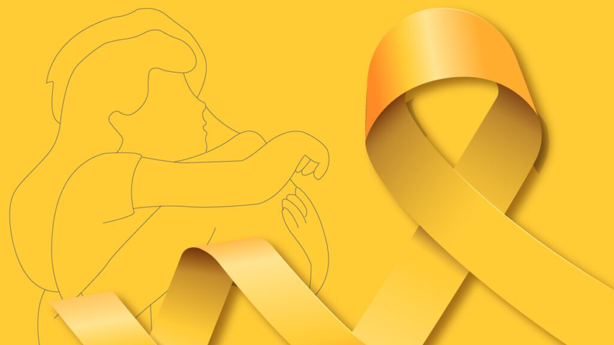

A campanha Setembro Amarelo® salva vidas! Em 2013, Antônio Geraldo da Silva, presidente da ABP, deu notoriedade e colocou no calendário nacional a campanha internacional Setembro Amarelo®. E, desde 2014, a Associação Brasileira de Psiquiatria – ABP em parceria com o Conselho Federal de Medicina – CFM divulgam e conquistam parceiros no Brasil inteiro com essa linda campanha.
O dia 10 deste mês é, oficialmente, o Dia Mundial de Prevenção ao Suicídio, mas a iniciativa acontece durante todo o ano. Atualmente, o Setembro Amarelo® é a maior campanha anti estigma do mundo! Em 2024, o lema é “Se precisar, peça ajuda!” e diversas ações já estão sendo desenvolvidas. O suicídio é uma triste realidade que atinge o mundo todo e gera grandes prejuízos à sociedade. De acordo com a última pesquisa realizada pela Organização Mundial da Saúde - OMS em 2019, são registrados mais de 700 mil suicídios em todo o mundo, sem contar com os episódios subnotificados, pois com isso, estima-se mais de 01 milhão de casos. No Brasil, os registros se aproximam de 14 mil casos por ano, ou seja, em média 38 pessoas cometem suicídio por dia.
Embora os números estejam diminuindo em todo o mundo, os países das Américas vão na contramão dessa tendência, com índices que não param de aumentar, segundo a OMS. Sabe-se que praticamente 100% de todos os casos de suicídio estavam relacionados às doenças mentais, principalmente não diagnosticadas ou tratadas incorretamente. Dessa forma, a maioria dos casos poderia ter sido evitada se esses pacientes tivessem acesso ao tratamento psiquiátrico e informações de qualidade.
O suicídio é um importante problema de saúde pública, com impactos na sociedade como um todo. Segundo dados da Organização Mundial de Saúde - OMS, todos os anos, mais pessoas morrem como resultado de suicídio do que HIV, malária ou câncer de mama - ou guerras e homicídios. Entre os jovens de 15 a 29 anos, o suicídio foi a quarta causa e morte depois de acidentes no trânsito, tuberculose e violência interpessoal. Trata-se de um fenômeno complexo, que pode afetar indivíduos de diferentes origens, sexos, culturas, classes sociais e idades. Segundo dados da Secretaria de Vigilância em Saúde divulgado pelo Ministério da Saúde em setembro de 2022, entre 2016 e 2021 houve um aumento de 49,3% nas taxas de mortalidade de adolescentes de 15 a 19 anos, chegando a 6,6 por 100 mil, e de 45% entre adolescentes de 10 a 14 anos, chegando a 1,33 por 100 mil. As taxas variam entre países, regiões e entre homens e mulheres. No Brasil, 12,6% por cada 100 mil homens em comparação com 5,4% por cada 100 mil mulheres, morrem devido ao suicídio. As taxas entre os homens são geralmente mais altas em países de alta renda (16,6% por 100 mil). Para as mulheres, as taxas de suicídio mais altas são encontradas em países de baixa-média renda (7,1% por 100 mil). Em países da Europa, houve um declínio nas taxas de suicídio e observou-se um aumento dessas taxas em países do Leste Asiático, América Central e América do Sul. Embora alguns países tenham colocado a prevenção do suicídio no topo de suas agendas, muitos permanecem não comprometidos. Atualmente, apenas 38 países são conhecidos por terem uma estratégia nacional de prevenção do suicídio.
Setembro Amarelo começou nos EUA, quando o jovem Mike Emme, de 17 anos, cometeu suicídio, em 1994. Mike era um rapaz muito habilidoso e restaurou um automóvel Mustang 68, pintando-o de amarelo.